Semana Tec Internacional · FJ27
Vivencia única de emprendimiento e innovación, junto a Venecia
Una semana en H-FARM, el campus italiano donde estudiantes, startups y empresas construyen juntos lo que sigue.
2 al 8 de mayo de 2027
Roncade (Treviso), Italia · H-FARM College, H-FARM Startup Center y H-FARM AI
Video · Welcome to H-FARM (3:19) · Ver en YouTube
01 · Qué es H-FARM
Un campus donde las ideas se vuelven empresas
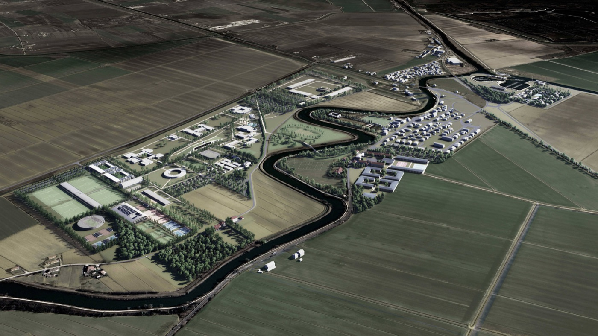
Desde 2005
Riccardo Donadon lo fundó para que las nuevas generaciones entiendan el cambio y construyan el futuro. La «H» de H-FARM es de human: las personas al centro.
Todo en un mismo lugar
Universidad, escuela de negocios, inversión en startups, consultoría digital e investigación conviven en el mismo campus.
Reconocimiento
El Financial Times lo nombró uno de los hubs de startups líderes de Europa, el primero de Italia.
€40 M
invertidos en más de 150 startups, desde la idea hasta la venta
Depop
el unicornio que nació en H-FARM en 2012; Etsy la compró en 2021 por US$1,600 millones
100 ha
de campus frente a la laguna de Venecia, 50 ya construidas
300+
eventos al año abiertos a estudiantes, emprendedores y empresas
La vida en el campus
Vas a vivir donde se construye la innovación
Toca cualquier foto para verla en grande.
H-FARM College
Aprenderás con quienes ya lo están haciendo
La universidad del campus
Licenciaturas y maestrías en negocios, emprendimiento, finanzas, IA, ciencia de datos, marketing digital y artes creativas.
Se aprende haciendo
Estudiantes, startups y empresas trabajan lado a lado en proyectos reales, con acceso directo a profesionales.
Tu equipo en H-FARM · pasa el mouse o toca para ver su perfil
Formación
Maestría (M.Sc.) en Política y Gobernanza Europea por la London School of Economics (LSE) y licenciatura en Estudios Internacionales y Diplomáticos por la Universidad de Trieste. Diploma avanzado en Aprendizaje de Adultos y Digitalización por la Universidad de Calgary y certificación ejecutiva en Mastering Design Thinking por MIT Sloan School of Management.
Especialidad
Alianzas académicas e internacionales, desarrollo corporativo B2B y B2C, programas de Executive Education, e-learning y servicios de carrera.
Cómo enseña
Promueve el lifelong learning centrado en el estudiante y conecta a las empresas con la academia internacional. Usa Design Thinking para armar planes de estudio ágiles, con aplicación práctica inmediata.
Formación
Egresado de la Universidad de Wisconsin y maestría por la Universidad McGill (Canadá). Da clases en H-FARM, la Universidad de Bolonia y la Universidad de Chichester.
Especialidad
Open Innovation, emprendimiento tecnológico, dirección de programas de aceleración de startups (más de 20 a nivel internacional), venture capital y estrategia de marca.
Cómo enseña
Aprender haciendo y resiliencia emprendedora. Con la premisa «Try, die, repeat», convierte el aula en un laboratorio donde iterar y manejar el fracaso son competencias clave para crear empresas.
Formación
Doctorado (PhD) en Inteligencia Artificial y Sistemas Multiagente por la Universidad de Cardiff (Reino Unido). Emprendedor tecnológico: fundó y dirigió Sellf, startup adquirida en 2018, y hoy es CEO de H-FARM AI.
Especialidad
Inteligencia artificial generativa, sistemas multiagente, ciencia de datos, emprendimiento deep tech y metodologías de ventas digitales.
Cómo enseña
Proyectos tecnológicos con impacto comercial directo. Quita la barrera entre la teoría de los algoritmos y la construcción de productos reales, para que los alumnos lideren con ética y rigor en la era de la IA.
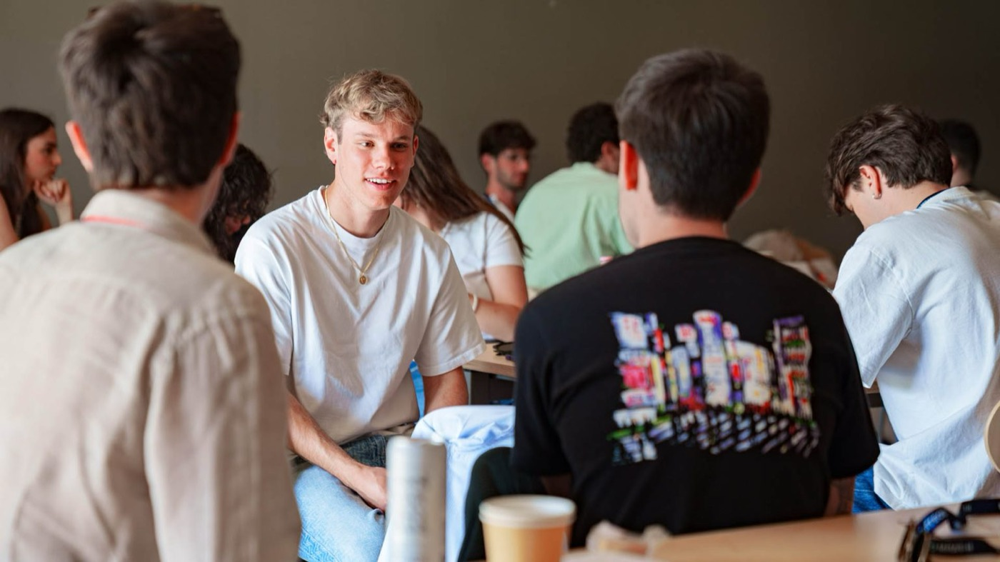
Visita cultural
Venecia y Burano
Antes de empezar a trabajar, recorremos Venecia con guía y tomamos el ferry a la isla de Burano.

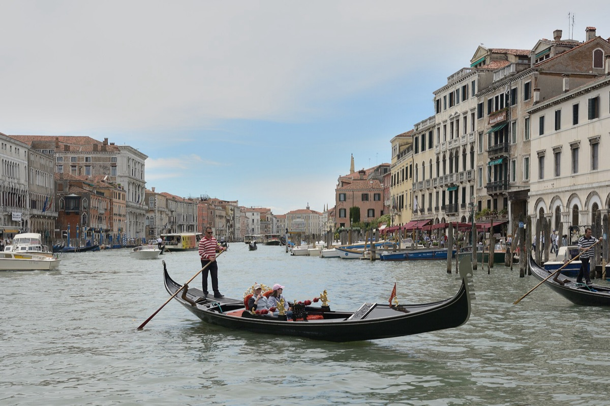
Venecia
Visita guiada por la ciudad de los canales, del Gran Canal al puente de Rialto, y cena con todo el grupo.
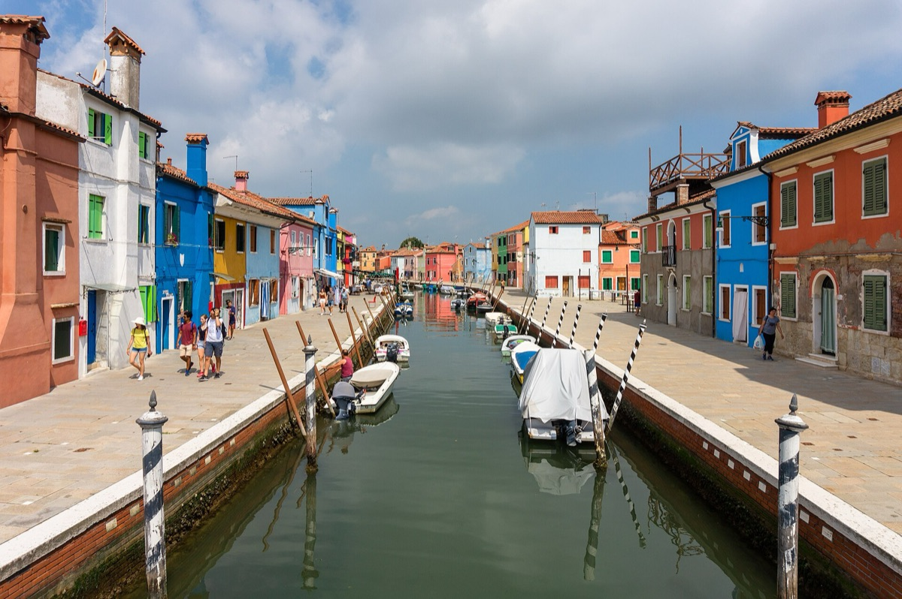
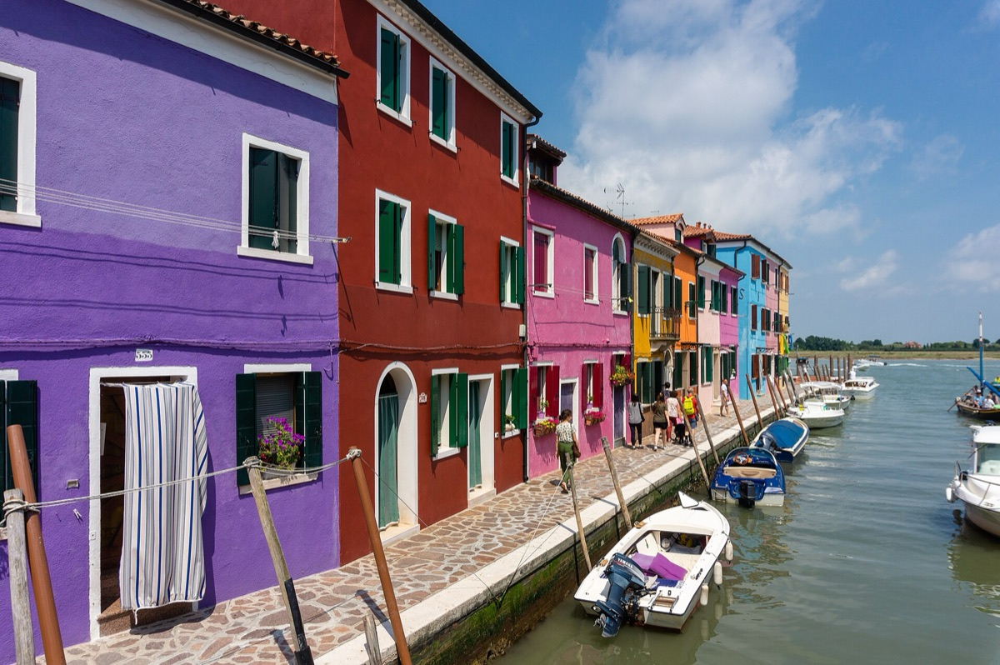
Burano
Ferry por la laguna hasta la isla de los pescadores, famosa por sus casas de colores y su tradición de encaje.
Fotos: Saffron Blaze (CC BY-SA 3.0), Wolfgang Moroder (CC BY-SA 3.0) y Marco Ober (CC BY-SA 4.0), vía Wikimedia Commons.
02 · Tu semana
Cinco días para llevar una idea de cero al pitch
En equipos, con métodos de startup y las herramientas de IA más nuevas. Elige un día para ver qué pasa.
Programa preliminar. El programa se ajustará al grupo final, considerando el grado de avance de las ideas y startups participantes.
Tema
Avance del día
Noche
Horario académico de 9:00 a 18:30 (el viernes, hasta las 18:00). Las noches son libres, salvo las del jueves y el viernes. Las empresas y la ciudad histórica las confirma H-FARM más cerca de la fecha.
03 · Lo que te llevas
Un proyecto real, presentado ante un jurado
Tu Venture Launch Package, en equipo · toca cada parte
Además
Diploma de H-FARM, contactos con fundadores e inversionistas europeos y un MVP para tu portafolio.
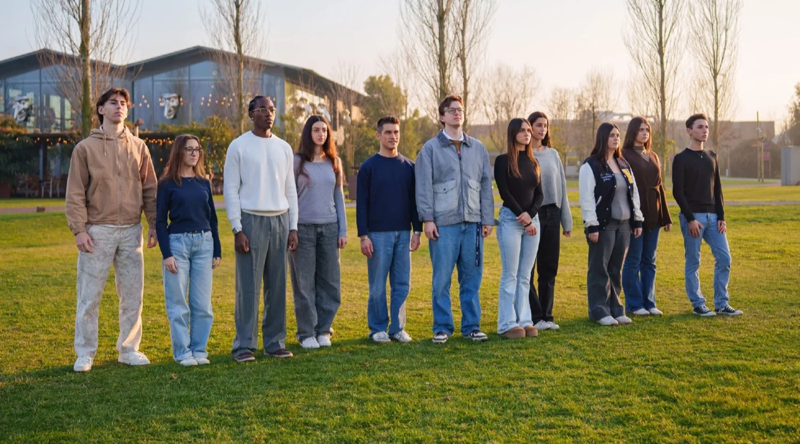
Créditos académicos
Qué materia acreditas
Esta Semana Tec Internacional cuenta como la Semana Tec 12 del semestre febrero–junio 2027 (del 3 al 7 de mayo) y revalida una de estas materias, según tu plan de estudios.
| Plan | Clave | Materia |
|---|---|---|
| 2019 | NI2001S | Visión global de los negocios |
| 2026 | NI2002S | Entorno Internacional de los Negocios |
¿Cuál me toca?
Depende del año de tu plan de estudios: plan 2019, NI2001S; plan 2026, NI2002S.
¿Dudas?
Si no sabes en qué plan estás o cómo se refleja en tu kárdex, escríbenos antes de hacer tu apartado.
04 · Inversión
Qué incluye tu programa
Vuelo
Vuelo redondo a Venecia.
Seguro
Seguro de viaje durante el programa.
Programa
Diseñado e impartido por H-FARM College, con licencias de software y materiales.
Hospedaje
6 noches en habitación doble o triple.
Alimentos
6 desayunos, 6 comidas y 6 cenas, una en Venecia y otra en una ciudad histórica.
Vida estudiantil
Torneo deportivo, cooking class y happy hours con startuppers.
Transporte
A las dos visitas a empresas y del aeropuerto de Venecia al campus, ida y vuelta.
Venecia
Paseo del domingo: transporte, visita guiada y ferry a la isla de Burano.
No incluye: gastos personales y comidas fuera del programa.
Inversión por persona
€3,980
Euros, en seis pagos de diciembre de 2026 a abril de 2027.
| Pago | Fecha límite | Estado | Monto |
|---|---|---|---|
| Total | €3,980 |
Agencia oficial del viaje
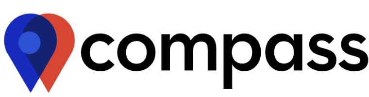
Compass organiza tu viaje de principio a fin
Durante más de una década, Compass ha creado experiencias internacionales que transforman la manera en que los estudiantes entienden su profesión, su entorno y su lugar en el mundo.
Conecta a sus participantes con empresas líderes, compañías disruptivas, instituciones y ecosistemas de innovación para llevar el aprendizaje más allá del aula.
Su misión es abrir puertas, conectar personas e ideas, impulsar el intercambio cultural y generar nuevas oportunidades, para formar talento más preparado, competitivo y conectado con el mundo.
+1,460
participantes
+24
destinos
+48
experiencias
+120
compañías
+14
años de experiencia
Vuelo internacional
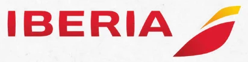
Ida
MEX → MAD → VCE
1 de mayo de 2027 · sale 11:25, llega 11:15 (+1 día)
Regreso
VCE → MAD → MEX
8 de mayo de 2027 · sale 19:50, llega 3:45 (+1 día)
Vuelo, ruta, horario y aerolínea sujetos a disponibilidad. Ida desde la Ciudad de México con escala en Madrid; llegas a Venecia el domingo 2 de mayo, día de la bienvenida.
Preguntas frecuentes
Lo que más nos preguntan
¿Dónde está H-FARM?
En Roncade, provincia de Treviso, Italia, a unos 20 minutos del aeropuerto de Venecia. El campus mide 100 hectáreas y da a la laguna de Venecia.
¿En qué idioma es el programa?
En inglés.
¿Qué cubren los €3,980?
Vuelo redondo a Venecia, seguro de viaje, 6 noches de hospedaje, desayunos, comidas y cenas, el programa académico, las actividades de vida estudiantil, el transporte a las visitas y al aeropuerto, y el paseo a Venecia y Burano. Solo corren por tu cuenta tus gastos personales.
¿Cuándo es el primer pago?
El primero es de €530 y vence el viernes 4 de diciembre de 2026. Después siguen cinco pagos de €690, el último antes del 16 de abril de 2027. Todos se hacen en el sitio de pagos.
¿Puedo viajar por mi cuenta, salir del programa a actividades personales o pasear solo en las visitas culturales?
No. Las actividades son en grupo y, salvo las salidas culturales, se desarrollan en las instalaciones de H-FARM.
¿Quién da el programa?
El equipo de H-FARM: Silvia Dell’Acqua (H-FARM College), Timothy O’Connell (H-FARM Startup Center) y Diego Pizzocaro (H-FARM AI).
Siguiente paso
¿Hasta dónde quieres llegar?
H-FARM College se lo pregunta a cada uno de sus alumnos: «How far will you go?». Esta semana puede ser tu primera respuesta.
-
1
Únete a la comunidad de WhatsApp
Ahí compartimos avisos, fechas y respuestas para todo el grupo. Escanea el código o entra con el botón.
Unirme a la comunidad -
2
-
3
Registra tus pagos
El primer pago es de €530 y vence el viernes 4 de diciembre de 2026.
Ir al sitio de pagos
Dudas
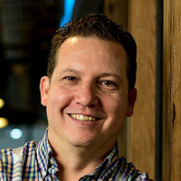
Pablo Salazar Rojo
Director de la carrera de Emprendimiento e Innovación, Campus Ciudad de México
WhatsApp: +52 81 2656 7120
Compass, agencia oficial del viaje
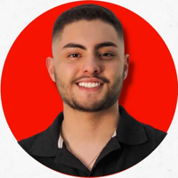
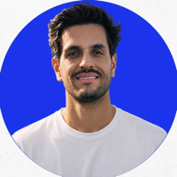
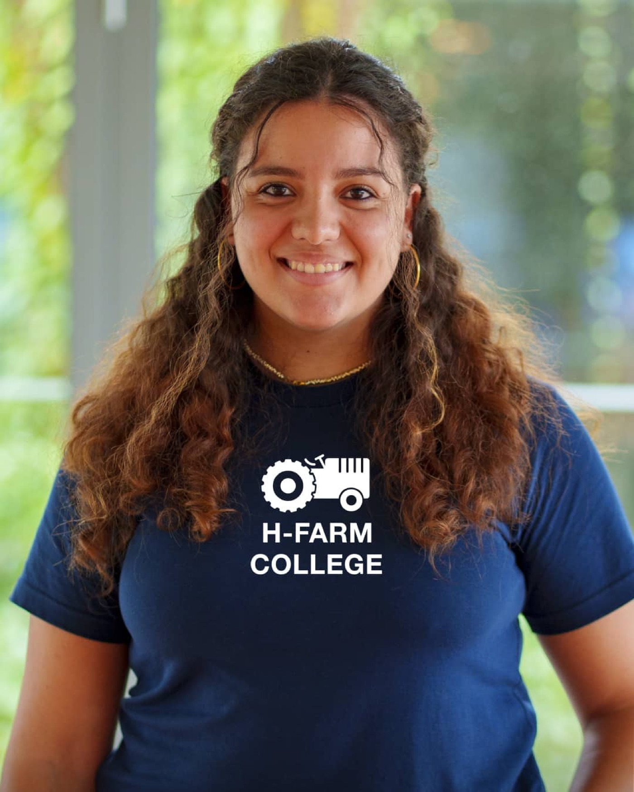
Conoce más
H-FARM en su canal de YouTube
Videos cortos en inglés para conocer el campus y a la gente con la que vas a trabajar. Se abren en YouTube.
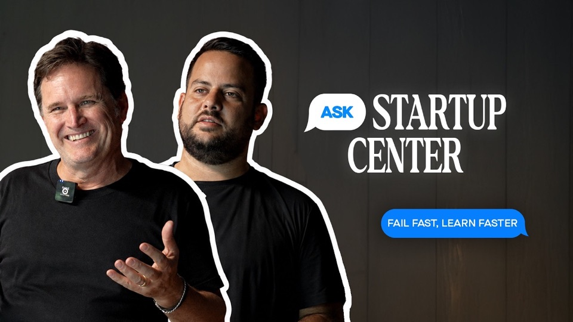
4:31Timothy O’Connell & Zeno Tosoni | Most Startups Fail. We Bet AnywayTu profesor del Startup Center habla de cómo apuestan por startups.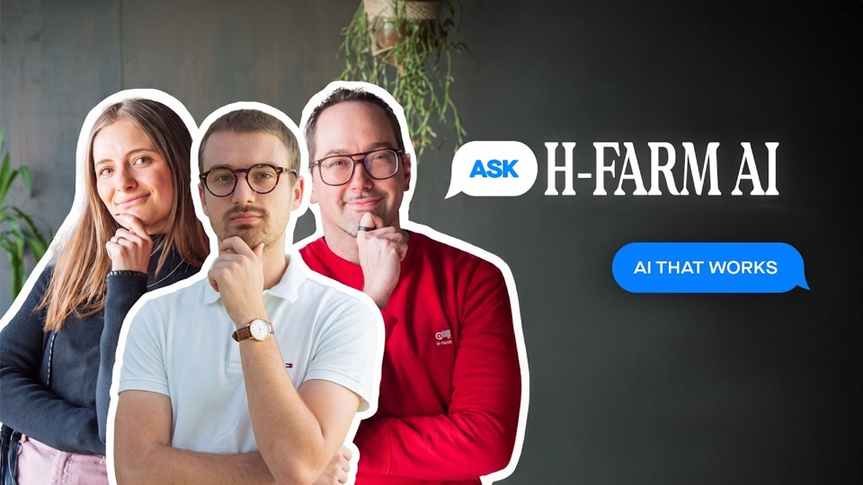
5:00H-FARM AI | The AI WhisperersEl equipo de H-FARM AI, que dirige Diego Pizzocaro.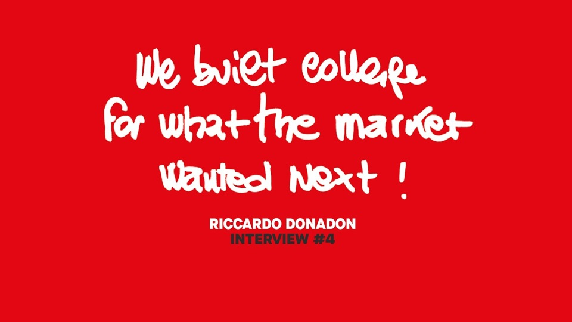
1:34Riccardo Donadon: We Built College for What the Market Wanted NextEl fundador explica por qué creó el H-FARM College.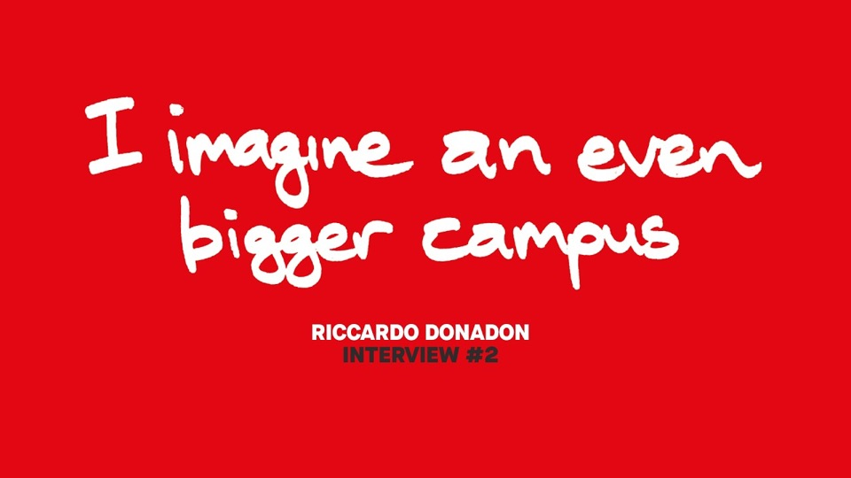
2:04Riccardo Donadon: I Imagine an Even Bigger CampusHacia dónde va a crecer el campus.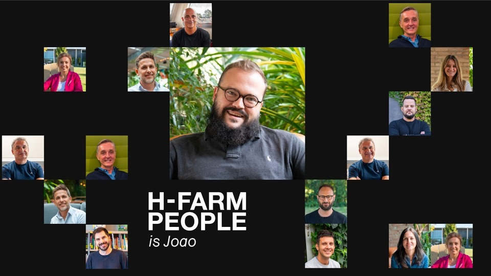
3:55João Fernando Saddock | H-FARM PeopleDe casi médico a director de marketing del H-FARM College.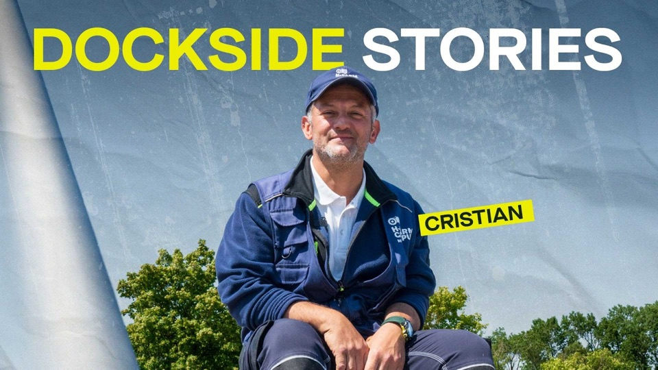
2:34Cristian Baesse – H-FARM Campus Marina | Dockside StoriesLa marina del campus en la laguna de Venecia.